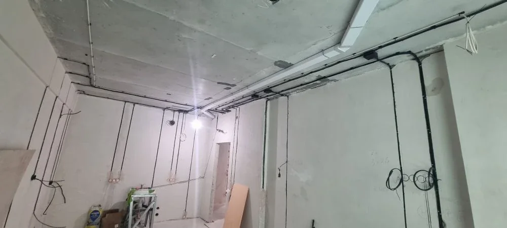

Частный дом / гараж
Электромонтаж гаража и мастерской: что предусмотреть до отделки
Гараж часто начинается с пары светильников и розеток, а затем в нем появляются автоматические ворота, компрессор, станки, обогрев и зарядное оборудование. Если определить будущие нагрузки заранее, электрику не придется переделывать после отделки.

Начинаем не с розеток, а со списка оборудования
Для расчета важно понимать, как будет использоваться помещение. Обычному гаражу нужны освещение, розетки, привод ворот и питание для периодически используемого инструмента. Домашняя мастерская может дополнительно включать компрессор, сварочный аппарат, станки, вытяжку, электрическое отопление и мощные зарядные устройства.
У оборудования различаются рабочая мощность, пусковые токи и режим использования. Поэтому несколько мощных потребителей нельзя без проверки объединять на одной случайно выбранной линии. Состав оборудования записывают до выбора кабеля и аппаратов защиты.
Когда нужен отдельный щит
Локальный щит делает обслуживание понятнее: можно отдельно отключить гараж, подписать линии и не идти в дом при срабатывании защиты. Он особенно полезен в отдельно стоящем здании, при нескольких группах освещения и розеток, наличии ворот, станков или трехфазного оборудования.
Питающую линию до гаража рассчитывают по выделенной мощности, длине трассы, способу прокладки и условиям эксплуатации. Одновременно определяют, где будет проходить кабель, как защитить его на улице и какой запас оставить для будущих нагрузок.
Какие линии обычно разделяют
- Основное и резервное освещение рабочих зон.
- Розетки общего назначения по стенам помещения.
- Автоматику ворот и наружное освещение въезда.
- Компрессор, станок или другое стационарное оборудование.
- Отопление, вентиляцию и инженерные системы.
- Отдельную подготовленную линию под будущее оборудование, если оно уже запланировано.
Фактическое количество линий определяется не шаблоном, а планировкой и нагрузками. Небольшой гараж может иметь простую схему, а полноценная мастерская требует более подробного разделения.
Розетки размещают по рабочим сценариям
Розетки около верстака нужны на удобной высоте и в количестве, которое позволяет работать без постоянных удлинителей. Для стационарных станков точки привязывают к будущему расположению оборудования. Отдельно предусматривают розетки для зарядки аккумуляторного инструмента, уборки и временных работ возле ворот.
Важно учитывать открывание ворот, шкафы, стеллажи и места хранения. Розетка, закрытая мебелью или установленная слишком близко к рабочей поверхности, быстро становится бесполезной. План помещения с размерами помогает избежать таких ошибок.
Освещение гаража и мастерской
Одного светильника по центру обычно недостаточно: автомобиль, открытый капот и стеллажи создают тени. Основной свет дополняют освещением верстака, зон хранения, смотровой зоны и пространства у ворот. Выключатели располагают у входов и в местах, где ими удобно пользоваться в темное время.
Световые группы желательно отделять от силовых розеток. Тогда неисправность инструмента не оставит помещение полностью без света. Для холодного гаража оборудование выбирают с учетом температуры, пыли и возможной влажности.
Защита, заземление и условия помещения
Гараж отличается от жилой комнаты пылью, перепадами температуры, металлическим оборудованием и возможной сыростью. Степень защиты электроустановочных изделий выбирают по реальным условиям конкретного места. Защитный проводник должен быть предусмотрен во всех необходимых линиях, а металлические корпуса оборудования подключены в соответствии с принятой системой защиты.
Номиналы автоматов и устройств защитного отключения подбирают после расчета кабелей и нагрузок. Увеличивать автомат, чтобы он не отключался при работе инструмента, нельзя: сначала выясняют причину срабатывания и проверяют соответствие линии оборудованию.
Запас под зарядку электромобиля и новое оборудование
Даже если зарядной станции пока нет, во время строительства можно предусмотреть свободную трассу, место в щите и резерв мощности. Это дешевле, чем вскрывать готовую отделку. При этом нельзя заранее назначать сечение кабеля и защиту без понимания мощности будущего устройства и доступной мощности дома.
Такой же подход работает для сварочного аппарата, подъемника, дополнительного компрессора или отопления: сначала резервируют возможность, а окончательное подключение выполняют по параметрам конкретного оборудования.
Что прислать для предварительного расчета
- План гаража или мастерской с размерами.
- Фото помещения, существующего ввода и щита дома.
- Список оборудования с мощностью и напряжением питания.
- Расположение ворот, верстака, стеллажей и станков.
- Описание отопления, вентиляции и наружного освещения.
- Расстояние от основного щита до гаража, если здание стоит отдельно.
По этим данным можно определить состав линий, уточнить вопросы и подготовить предварительную оценку. Окончательное решение принимают после осмотра объекта и проверки исходных условий.
Для комплексных работ посмотрите страницу электромонтажа коттеджей и частных домов. Также полезны материалы что входит в электромонтаж частного дома и сборка электрощитов.
Нужно рассчитать электромонтаж гаража или мастерской?
Пришлите план помещения, фотографии и список оборудования. Подскажем, каких данных не хватает для предварительного расчета работ в Екатеринбурге и Свердловской области.
Оставить заявку